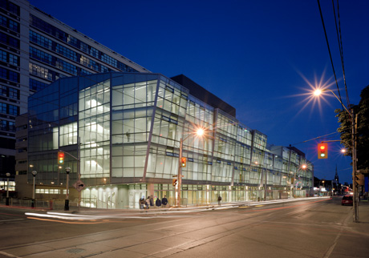

2017-Present
Currently enrolled in Computer Engineering at Ryerson University and have CGPA of 3.87
Rinay Shah
Welcome to my Online
Portfolio!
Explore this online resume extension, where you
can learn more about me,and check out
some personal projects I have going on!


Currently enrolled in Computer Engineering at Ryerson University and have CGPA of 3.87
I was an Advanced Placement student at Central Peel Secondary School and graduated with a 90% average
647-821-3910
rinayshah@yahoo.com